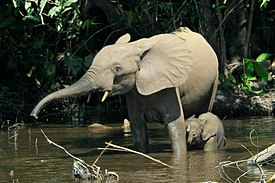

Слоны - семейство класса млекопитающих из отряда хоботных.
Виды слонов:
- Азиатский слон (Индийский)
- Саванный слон (Африканский)
- Лесной слон (Африканский)
Различия между африканским слоном и азиатским слоном:
- Размер ушей;
- Форма лба;
- Только у некоторых азиатских слонов есть бивни;
- Количество «колец» хобота;
- Количество ногтей;
- Длина хвоста;
- Спина африканского слона опускается вниз, а у азиатского слона она выгибается вверх.
Слоны — самые крупные наземные животные на Земле. Обитают они в Юго-Восточной Азии и Африке в тропических лесах и саваннах. Самыми крупными являются африканские саванные слоны, их масса может превышать 6 тонн.

Саванный слон (Африканский)

Азиатский слон (Индийский)

Лесной слон (Африканский)